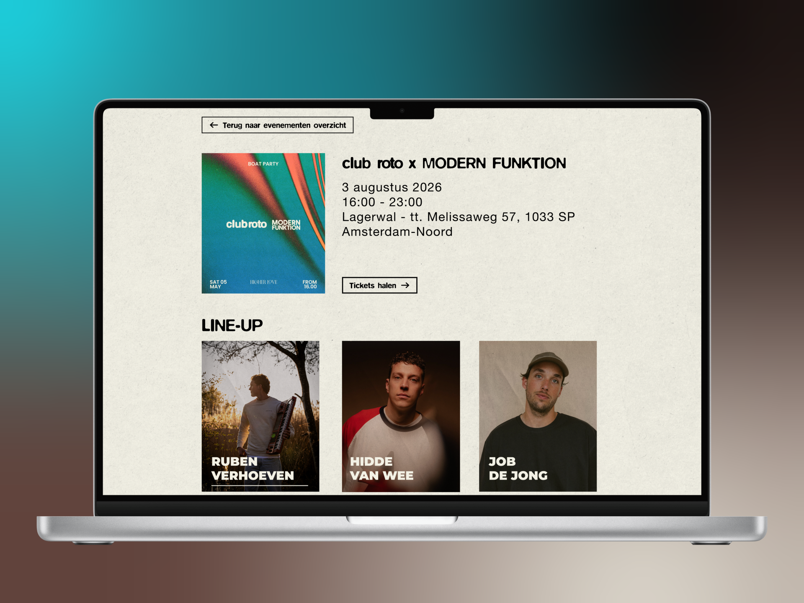
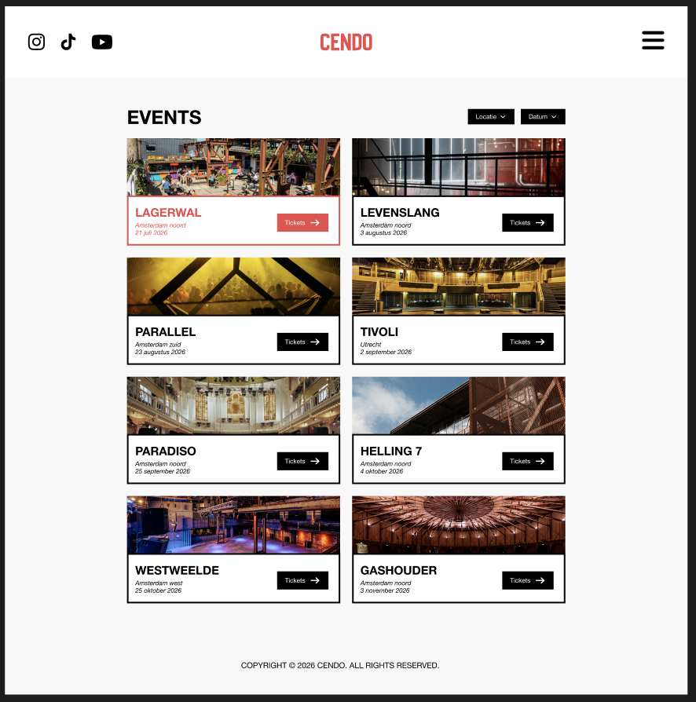
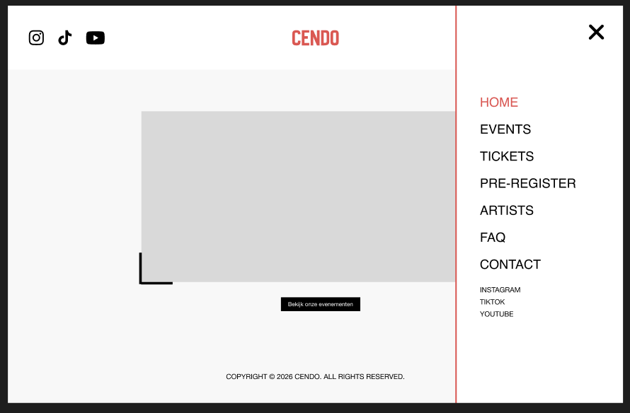
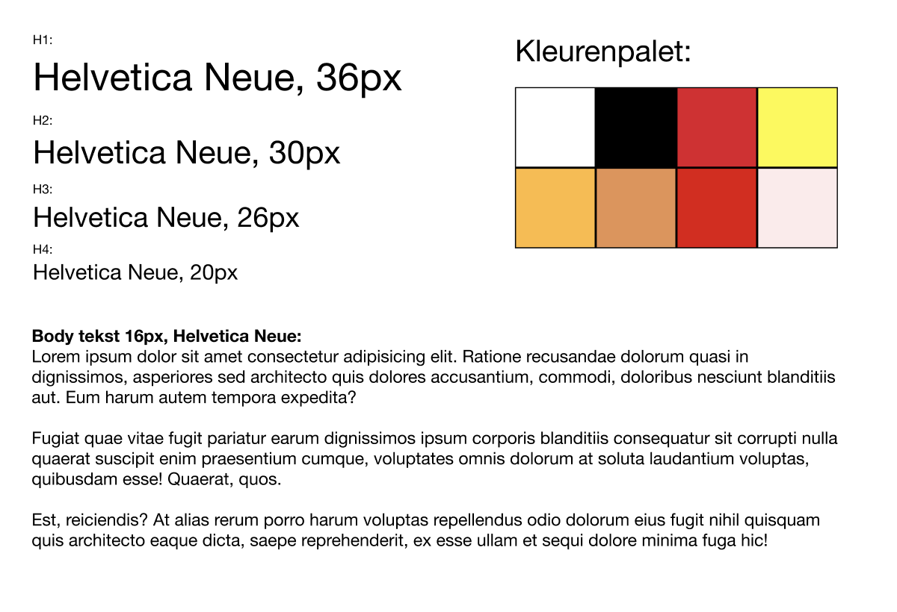
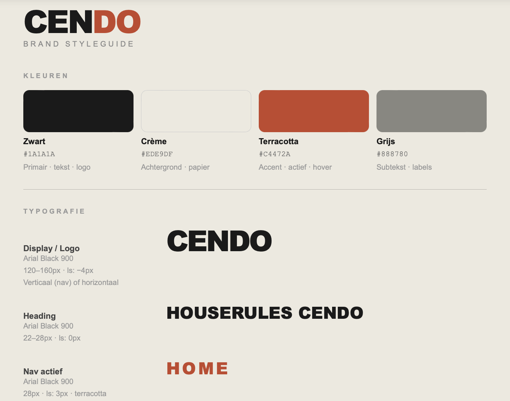
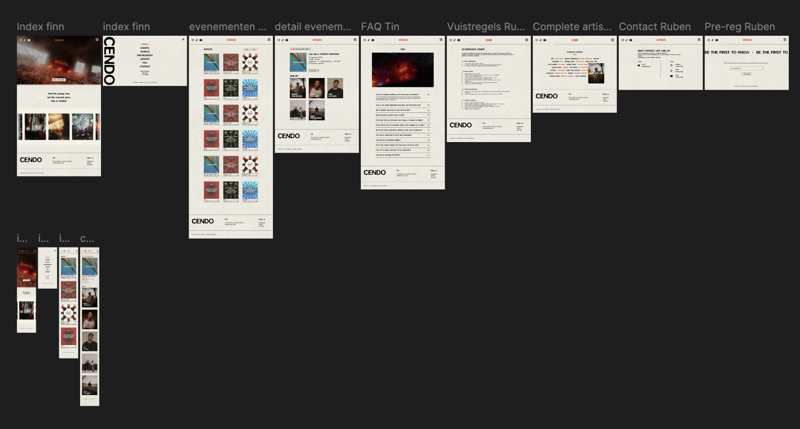
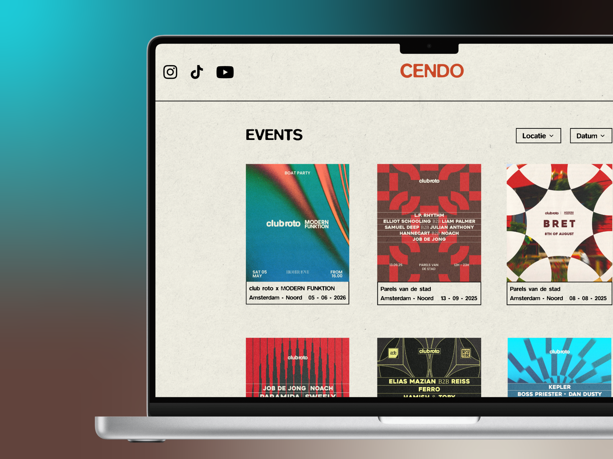
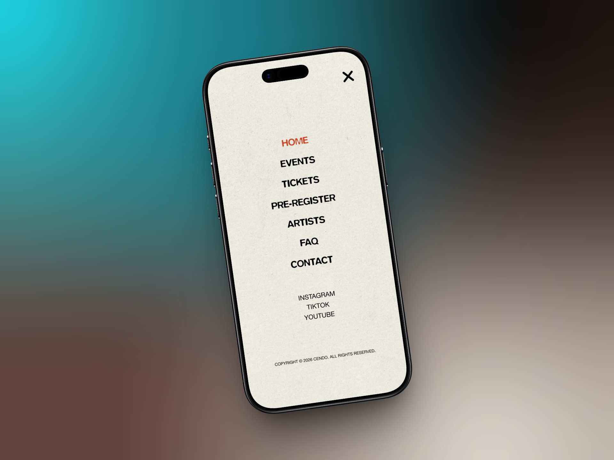

PROJECT TECH
Profiling: TECH, Communication and Multimedia Design,
(Amsterdam University of Applied Sciences 2026)
Together with a team I built a website for a house event, including a working backend and CMS. Within this project I worked on both frontend and backend and built the Artists CMS, which allows artists to be managed. I also developed an interactive artists page.
This project gave me experience with HTML, CSS, JavaScript, Node.js and working within a development team.
The website is not online!

PROJECT INFO
MY DESIGN PROCESS
PROCESS BREAKDOWN
Lo-Fi Prototype
At the start of the project I began with a Lo-Fi prototype. This is a simple sketch of the website without colours, images or details. I chose this because we first wanted to focus on the structure and layout of the website, without immediately thinking about design choices.
By starting with a Lo-Fi prototype we could quickly develop and adjust ideas. It was easy to change things like button placement, navigation or page layouts. This allowed us to spot mistakes early and avoid having to rebuild things later in the process.
I thought about questions like:
- What does a user look at first?
- How does someone navigate through the website?
- What information needs to be immediately visible?
Based on that I chose:
- a clear navigation at the top of the page
- clean page layouts with logical sections
- important buttons (like viewing events) placed in prominent spots
By working with a Lo-Fi prototype first I learned that:
- you reach a good idea faster
- it's easier to process feedback
- a good structure is the foundation of a strong website


Corporate identity
During the project we established a corporate identity before we started coding. We did this so the entire website would have one clear and consistent look. Without a style guide, every page could look different because everyone makes their own choices. By agreeing on colours, fonts and styles in advance, we made sure everything fit together well.
When creating the corporate identity we looked at what fits a house event. We wanted to create an atmosphere that radiates both energy and clarity.
That's why we chose:
- colours that radiate energy without being too busy
- a clear and modern font that stays easy to read
- enough white space so the website stays clean and organised
By working with a corporate identity I learned that:
- consistency is important for a professional website
- design needs to be functional, not just visually appealing
- you always need to consider the user when making visual choices


Hi-Fi Prototype
After finishing the Lo-Fi prototype, we moved on to a Hi-Fi prototype in Figma. This is a fully worked-out version of the website with colours, images, fonts and styling already applied.
Improvements compared to Lo-Fi:
- clearer visual hierarchy added
- colours and contrast used so buttons and titles are more visible
- real content and images added for a more realistic feel
- navigation made clearer and more user-friendly
By making the Hi-Fi prototype I learned that:
- design and usability need to work together
- a well-developed design makes coding easier
- you get better feedback on a realistic design

Testing & Feedback
During the project we tested the website with real users. We did this to check whether the website was clear and easy to use. Testers were given tasks, such as finding an event, viewing details and looking up information like rules or tickets.
User feedback and test results
The tests showed that the website generally worked well. Users could find events quickly and found the structure clear. However, a few areas for improvement also came up.
What didn't work as well:
- Some users didn't notice that certain elements were clickable (like the address on an event)
- The website was sometimes experienced as too calm or too "white" for a house event
- The ticket button wasn't working yet, which confused users
- Not all interactive elements were immediately clear
Improvements
- Make clickable elements clearer (for example by adding styling or hover effects)
- Add more visual elements like photos and videos to give the website more atmosphere
- In the future connect the ticket button to an external site
- Think more carefully about how users navigate through the website
These tests taught me that as a creator you often think something is obvious, while that isn't always the case for a user. Testing helps to discover these issues and improve the website.
Development (HTML, CSS, JS, EJS & MongoDB)
During the development of the website we worked with HTML, CSS and JavaScript. At first we built separate pages in HTML, but later we switched to EJS with partials. This was an important technical decision.
Technical choices
We chose to use partials because we used elements like the header and footer on multiple pages. If you put that in every page separately, you have to manually change everything for every small update. By using partials we only needed to change it in one place. This made the code cleaner and easier to maintain.
We also used JavaScript to make the website more interactive. One example is the artists page, where photos appear when you hover over a name. I also used JavaScript to dynamically show artists from the database and to make the hover effect move smoothly.
With CSS I made sure the website kept the same style across all pages. I paid a lot of attention to white space, alignment and clear buttons. I also used CSS for hover effects, colours and the general layout of the pages.
Challenges
During the build I also ran into a few problems. One example was an issue with the hamburger button on the pre-register page. The button was there but couldn't be seen. At first I thought it was caused by the partial, but it turned out another button with an incorrect margin-bottom was shifting the layout.
Another challenge was connecting the frontend and backend on the artists page. The artists needed to come from the database automatically instead of being hardcoded in HTML. To do this I needed to understand how data was sent from MongoDB to the page and how to display it using a loop in EJS.
Solutions
I solved these problems by testing and debugging step by step. For the hamburger button I used the browser inspector and commented out parts of the CSS until I found the cause. For the artists page I worked with forEach and index % 5 to get the layout right. I also learned that it's important to break big problems down into smaller steps.
Performance and responsiveness
During the build I also took performance and responsiveness into account. By using partials the code stayed smaller and cleaner. I also made sure animations ran smoothly by using requestAnimationFrame instead of heavy or unnecessary updates.
What I learned from this
Working on this part of the project taught me that development isn't just about making something work, but also about how you build it. A good HTML structure, reusable components with partials, clean CSS and smart JavaScript solutions make a project much easier to maintain and more pleasant to use.
RESULT


Let's build something together!
I'm currently open to internships, freelance projects and collaborations.
Let's get in touch!